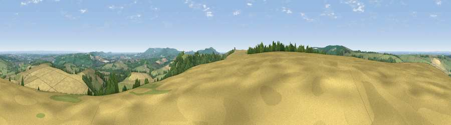

Viewpoint near Gatcombe
#4016 in England · top 29% of its area beats it · near GatcombeWhere it is
The exact computed spot (SZ 47775 85275). Click the marker for map links.
The view, rendered

A 360° render of this exact spot computed from the terrain model, tree cover and land cover — summer colours, afternoon light, calibrated against photographs of famous viewpoints. Real trees, hedges and buildings will differ in detail.
The panorama
Grey silhouette: terrain skyline in each direction (720 bearings, Earth curvature and refraction included). Dashed green: skyline with trees (+15 m) and buildings (+8 m) as obstacles. Blue strip: how far the ground is visible on each bearing.
Where the view opens
Wedge length = distance to the farthest visible ground on that bearing (vegetation-aware). Rings at 10, 25 and 50 km.
What fills the view
41% grassland · 37% cropland · 17% woodland · 3% built-up · 2% water
Angular shares of the visible panorama (visual magnitude), not map area. Landscape diversity 0.53 (0–1 Shannon).
Key numbers
More beautiful places nearby
The staircase of upgrades: each row has a higher view potential than everything closer. Driving times are estimates from straight-line distance, calibrated against real road routing — check an actual route before setting out.
| Place | Direction | Drive | Score |
|---|---|---|---|
| Viewpoint near Chillerton | S · 2 km | ~5 min | 78.3 |
| Limerstone Down | WSW · 4 km | ~10 min | 84.5 |
| Mottistone Down | W · 7 km | ~15 min | 87.2 |
| St Catherines Hill | S · 8 km | ~16 min | 87.6 |
| Viewpoint near Chale | S · 9 km | ~18 min | 88.3 |
| Viewpoint near Niton | S · 9 km | ~18 min | 89.2 |
| Viewpoint near West Bexington | W · 93 km | ~117 min | 89.5 |
| The Knoll | W · 94 km | ~118 min | 91.0 |
50.66519, -1.32538 · source: screening · position refined by local search. Computed location — check access rights before visiting.